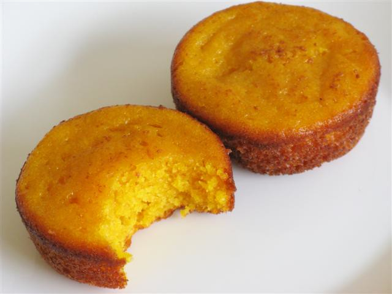

Microwave Orange Cake

12 minutes | sweet
Description
Another small microwave sweet.
Using fruits for a treat!
Ingredients
- 1 orange with peel
- 2 teacups of sugar
- 4 eggs
- 1 teacup of coconut oil
- 2 teacups of flour
- 1 tbsp. of yeast
- Brown sugar
Steps
- Clean the orange and cut it into 4 pieces. Remove seeds and core.
- Mix the orange pieces with the eggs on a blender.
- Add the oil and sugar, and mix again.
- Add the flour and yeast, and mix once more.
- Sprinkle the brown sugar on top.
- Bake in the microwave oven for 12 min. Use a microwave-capable mold.